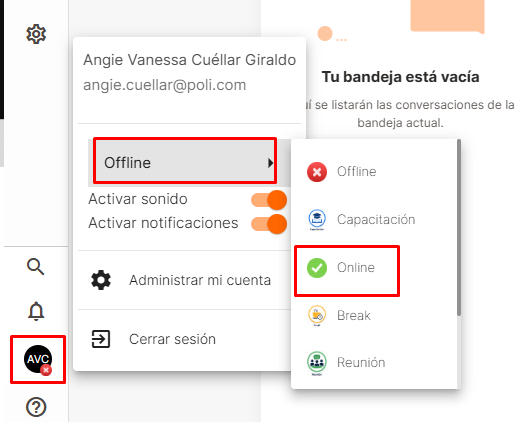
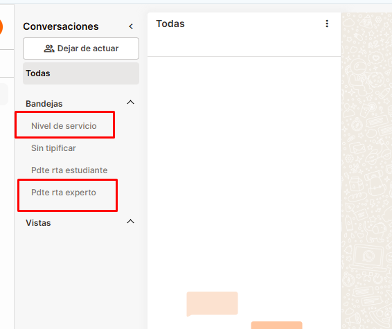
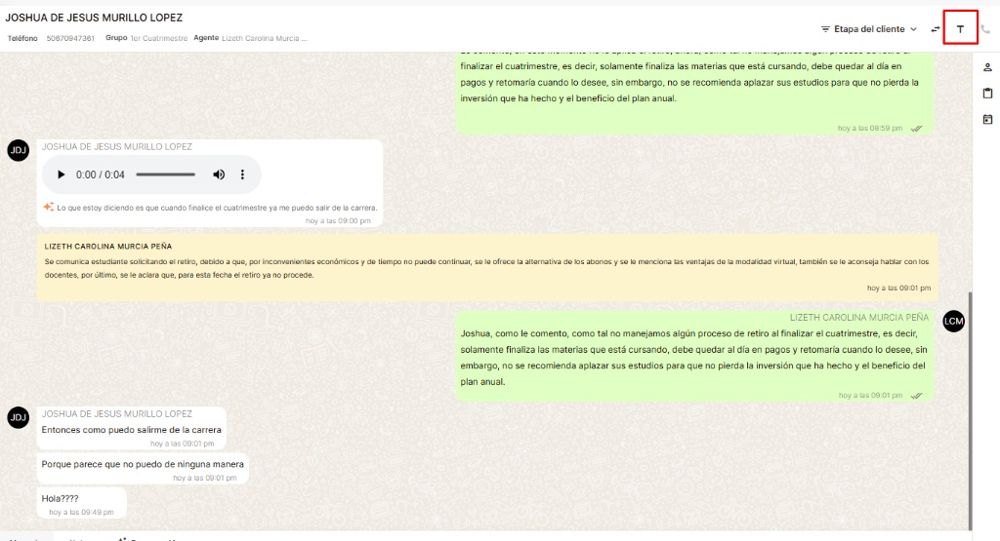
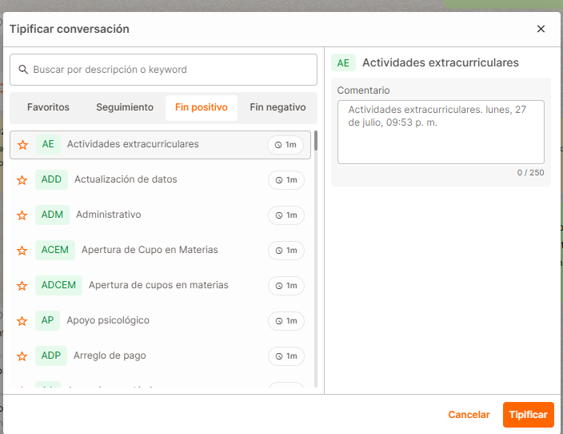
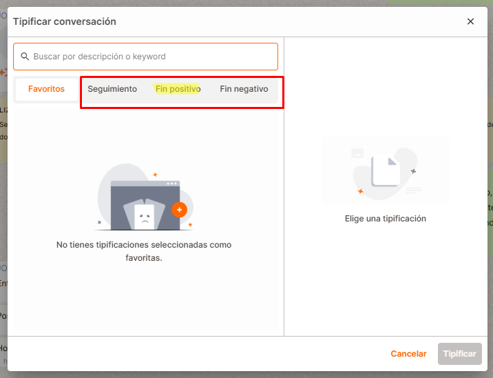
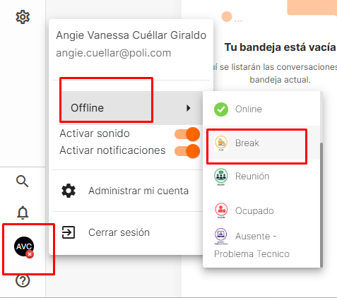
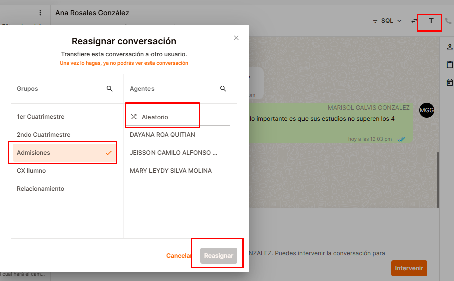
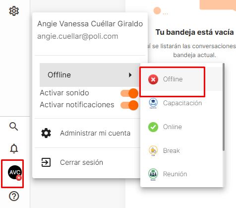

Modo Online On 🔥
Para arrancar tu gestión, el primer paso indiscutible es cambiar tu estado en la plataforma a Online. ¡Aquí empieza el juego!

El Core: Las Bandejas 🗂️
¡Libertad y Productividad sin límites!
Ninguna herramienta hasta ahora nos había permitido tener tanta libertad. La gran ventaja de ATOM es que tú tienes el control absoluto para organizar tus conversaciones y decidir cuántas gestionar al mismo tiempo, permitiéndote ser mucho más productivo.
Inicia atendiendo la bandeja Nivel de servicio. Recomendación: Toma bloques de 3 a 5 conversaciones a la vez.
Mantente pendiente de la bandeja Pdte rta experto para dar prioridad a los estudiantes que ya te contestaron. Puedes manejar el mismo volumen (3 a 5 simultáneas).
Nueva Bandeja: Pdte Cierre
Aquí estarán los chats que ya tipificaste en HubSpot y solo esperan el cierre final en ATOM.
¿Cómo funciona? Si no puedes cerrarlo de una vez, colócale la tipificación de seguimiento Tipificado HS para enviarlo a esta bandeja.

Reglas de Oro Inquebrantables 🏆
-
NO solicitar datos: Solo verifica que los datos estén correctos en Analytics.
Excepción: Se deben pedir cuando identifiquemos que es un tercero o si no viene la información en el resumen. -
Lee el resumen: El objetivo es atender la consulta que tiene el estudiante (el bot te da un resumen o puedes revisar lo que platicó con el robot).
¡Prohibido preguntar "en qué le puedo ayudar"! -
No repitas información del bot: Es importantísimo no volver a enviar información que el bot ya le proporcionó al estudiante. Revisa bien el historial para continuar la atención desde donde quedó.
Tipificación: El Momento Clave 🎯
1. Primera respuesta: Tipificación en HubSpot
Con la llegada de ATOM, vamos a tipificar en HubSpot con la primera respuesta. Una vez identificas la pregunta y le das la respuesta al estudiante, con eso dejas la tipificación.
*Nota: Si más adelante hay que crearle un caso, pues entonces más adelante le creas el caso en derivación. Esto garantiza el orden y que las conversaciones queden tipificadas antes de que los disparadores las cierren.
2. Cierre y Tipificación Final (ATOM)
Al concluir la atención, desde el chat (en la "T" superior derecha), debes dejar la tipificación final.
-
Selecciona Fin positivo O Fin negativo
(Debe ser uno de los dos, NO se pueden poner los dos). - El que sí se puede dejar adicional es la tipificación de Seguimiento.


¡ALERTA ROJA EN FIN POSITIVO!
Al seleccionar Fin Positivo, NO debes dejar ningún comentario. Solo selecciónalo y da clic en Tipificar.

Pausas, Transferencias y Fin ⏱️
Ir a Break
Cambia tu estado a Break. Al regresar, tu prioridad #1 es atender los chats que están en la bandeja Pdte rta experto.

Transferencias
Es importante que tengas en cuenta que debido al nuevo modelo de trabajo con ATOM solo vamos a transferir al área de Admisiones.

Fin de Turno
Una vez finalizada tu jornada y completada tu meta, cambia tu estado a Offline y recuerda Cerrar sesión.
